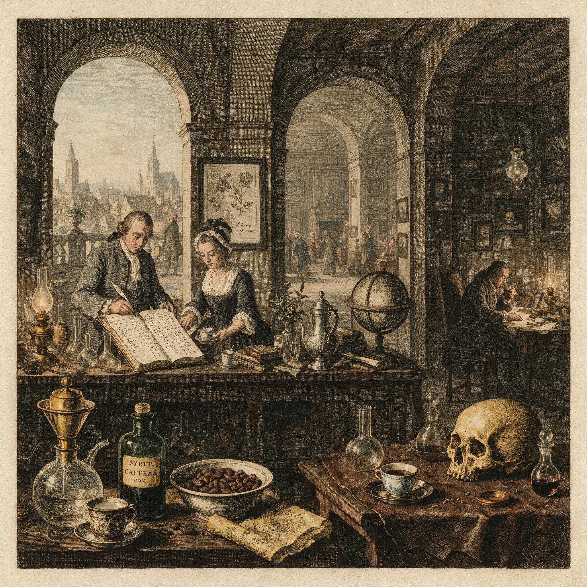

第 15 章
提神的陷阱
咖啡因不提供能量。这个句子说出来，很多人会愣一下，因为它几乎是冲着每日经验去的。喝下第一口浓缩咖啡、灌下半罐能量饮料之后，身体的感觉如此确定：眼皮不再发沉，注意力重新聚拢，困意退到

提神的陷阱：历史出版插图
AI 生成插图，非史实影像。
了背景里。
但“不困了”和“补了能量”之间，隔着一条被营销词汇与日常错觉长期遮蔽的生理沟壑。提神产品一遍遍使用充电、灌注、激发潜能这类语言，身体内部真实发生的事，却更接近另一个动作：钳断警报线。
要看清这个动作的后果，不能只盯着个人尺度的体验。2020年8月，全世界正在学习辨认一种新病毒发出的身体信号，南加州大学的科学家报告称，2019冠状病毒病的初始症状有一个“可能”顺序：先发烧，然后是咳嗽和肌肉疼痛，恶心和呕吐通常出现在腹泻之前。这份报告试图在混乱的临床表现中建立一种可预测的序列，一种身体信号先后出现的逻辑。发热作为最显性、最容易被体温计抓住的警报，被放在了这个序列的开端。但紧随其后的，是一种更模糊、更难以量化的信号：疲劳。
它没有数字，没有仪表，没有清晰的外部刻度，却同样构成了身体要求减速、要求重新平衡的核心指令。当全球公共卫生的焦点都集中在追踪发热、咳嗽这些硬指标时，另一种更为日常、更为隐蔽的信号压制行为，早已在现代生活的肌理中常态化：人们用咖啡因、能量饮料和整个提神文化，系统性地对抗疲劳信号。上一章讨论的退烧，是对一个清晰警报的短期干预；这一章要讨论的提神，则是对一个模糊警报的长期静音。它的风险，恰恰藏在模糊二字里。
先回到那个最直接的体验：喝完咖啡，确实不困了。这个体验真实不虚，问题在于如何解释它。日常解释很自然：我累了，能量不足，咖啡因补充了能量，所以我又有精神了。这个解释太顺滑，顺滑到一个关键细节被漏掉了。身体并没有因为咖啡因而多出一分一毫的能量货币。一个细胞直接可用的能量形式是三磷酸腺苷，咖啡因不产生它。糖、脂肪、蛋白质可以被代谢成它，但咖啡因不进入这条产能路径。
那问题来了：如果能量没有增加，为什么疲劳感减轻了？答案藏在疲劳感的来源里。
人在清醒状态下，脑内一种叫腺苷的物质会慢慢累积。它不是凭空冒出来的杂质，而是细胞能量代谢的副产物。只要神经活动在持续，只要身体在消耗能量，腺苷的浓度就会一点一点升高。它像一个化学计时器，一旦与脑内相应受体结合，就会抑制神经元兴奋性，放慢传导速度，向大脑发出需要休息的信号。换句话说，腺苷不是能量计本身，而是能量计旁边的报警器。它的响起，并不总意味着能量已经见底，而是意味着继续高速运转的代价正在累积，身体需要停下来做结算、修复、补充。这个信号，就是疲劳最底层的生化语言之一。
咖啡因的作用，正在于它的分子结构与腺苷相似。它可以抢占腺苷受体，占据那个本该由腺苷坐上去的位置，却不触发后续的抑制效应。于是奇怪的事情发生了：腺苷仍然在累积，浓度还在升高，它的报警声仍然在响，但神经元听不见了。大脑暂时收不到累了的信号，清醒和警觉的状态于是被维持在了一个原本不该继续的水平上。这就是为什么咖啡因不是燃料，而是钳断警报线的钳子。
报警器没有修好，机器也没有加油，只是没有人再听到警报声。磨损照常进行，支出照常发生，储备照常下降，唯一改变的是操作台上的人失去了那条最关键的内部反馈。这个类比一旦立起来，很多关于提神产品的说法就变得可疑了。
所谓能量饮料，其核心成分大多是咖啡因和糖。糖确实供能，但短时间内的血糖冲高更多是瞬时波动，长期依赖带来的是另一套代谢信号问题。而咖啡因的成分，从头到尾就没有提供能量这一项。可这个行业的语言，几乎不会去区分刺激和营养。它把神经警觉性的临时提升，说成能量的补充；把疲劳信号的暂时屏蔽，说成潜能的释放。于是人们喝着这些产品走进深夜，坐在工位前，以为身体得到了某种追加燃料，实际发生的是：身体仍在消耗它原有储备，只是那个提醒它停下来的声音被调成了静音。
更深的误读，发生在意志力的叙事里。现代工作文化常常把疲劳视为一种可以靠意志战而胜之的软弱。很多人不是不知道疲劳在哪里，而是选择用扛过去来证明自己。
在这种价值观里，疲劳信号不是身体在说需要调整，而是自己在说快撑不住了，而前者需要回应，后者需要克服。咖啡因和能量饮料于是成了意志力的同谋。它们不改变环境，不减少任务，不增加休息，只是让一个人能够在更长时间里无视身体发出的限制信号。可身体设置这道信号，本就不是为了刁难，而是为了让支出与储备在一个可持续的区间里动态平衡。意志力可以让人在考试前夜多看几页书，但意志力不能让腺苷停止累积，不能让神经元在受体被阻断后依然得到修复。
这种系统性压制造成的问题，可以用一个新概念来描述：疲劳债务。睡眠医学里早有睡眠债务的说法，指的是长期睡眠不足会像欠债一样累积，不是补一觉就能完全抹平。疲劳债务的范围更广。它不仅涵盖睡眠不足导致的认知疲劳，还涵盖免疫系统在长期压力下积累的免疫疲劳，以及代谢系统在持续高负荷下积累的代谢疲劳。咖啡因与提神文化所做的，其实是让一个人在债务不断增加的时候，暂时感觉不到债主催款的压力。但债主没有消失，利息还在滚动。
身体的调节系统并不会因为报警器被剪断，就停止记录这些欠账。等到咖啡因代谢掉，受体重新被腺苷占据，报警声会以更响的方式回来。那时候人们往往再喝一杯，再压下去一轮。如此循环，身体失去了调节支出与储备平衡的能力，人失去了对真实疲劳水平的感知，慢性疲劳、情绪低落、认知下降、免疫波动，都可能在这个长期静音的过程中慢慢滋生。
2020年8月那份症状顺序报告，之所以值得在这里重提，是因为它暴露了人们对不同身体信号的差别待遇。发热因为有体温计，有清晰的数字，有公共卫生筛查的价值，被放在显要位置。而疲劳，尽管在大量亲历者的描述中同样甚至更加顽固，却因为无法被手指头测出来，被长期归入一种模糊的主观感受。
医学上，有一种叫慢性疲劳综合征的疾病，又被称为肌痛性脑脊髓炎，其病因至今尚不完全清楚。遗传、环境、神经、免疫和能量代谢都被认为可能参与其中，但没有任何单一因素能解释全部病例。
科学家逐渐形成的一个共识是，这是一种生物学疾病，不是精神或心理疾病，也不是意志不坚造成的。这一点本身就很耐人寻味：一种主要表现为极度疲惫以至于严重影响日常功能的疾病，竟然需要科学界反复强调它不是假的。这恰恰说明，疲劳信号在现代文化中处于一个多么尴尬的位置。它太像偷懒的借口，太容易被归因于性格软弱，太容易在扛过去、打起精神、别想太多的劝告中被轻轻打发。咖啡因的流行，正好给这种文化提供了一种化学支持：不需要理解疲劳，只需要暂时关掉它。
同样的压制逻辑，在能量饮料的市场语言中登峰造极。一罐饮料的配方表里，牛磺酸、B族维生素、咖啡因、糖，被包装成一组能量矩阵投放到广告里。年轻人熬夜晚睡、考试赶工，抓过一罐冰镇饮料的时候，大脑很难去分辨这里面哪一样是真正的能量，哪一样只是掩盖了疲劳的警讯。饮料的冷感、气泡的刺激、配方的甜味，再加上咖啡因的神经阻断作用，共同包装出一种强大的感官幻觉。它不提供能量，却提供了清醒；
它不处理疲惫的结构性原因，却把疲惫的主观感受压到了意识的底层。这就好像一个工厂，仪表盘上的红色警示灯不断闪烁，操作员不是去查看故障，而是用黑胶带把警示灯贴住，然后继续加大马力。机器在下一时刻会不会出事，不取决于灯还亮不亮，而取决于内部压力是否真的到了极限。可一旦灯被贴住，操作员就失去了判断的依据。
咖啡因对疲劳信号的阻断之所以特别危险，还有一个原因：它几乎没有直接引爆的时限。与酒精、泰诺或其他药物不同，一杯咖啡或一罐能量饮料通常不会让人立刻感觉自己在用药。它太日常了，日常到就像喝水。但它的机制并不温和。受体被占据，信号被截断，神经警觉性人为拉高，交感神经兴奋，心率上升——这些都是真实发生的生理事件。只是它们被包裹在提神的口感和文化习惯里，很少被当作医疗行为或药物干预来看。
人们也不会像吃退烧药那样，在喝咖啡之前想一想：我是在治疗？还是在逃避？我更应该问的是：我的身体现在通过这个信号想说些什么？
也许有人会反驳：咖啡因并不总有害，适量饮用与多种人群的日常认知有所关联，让人保持舒适的生活节奏。这个反驳是公平的。问题从来不在于咖啡因本身是好是坏，而在于它是否被当作对抗疲劳信号的手段来使用。
一个人早晨喝一杯咖啡，是改变身体的节奏；一个人夜里连喝两罐能量饮料，是把身体要停止的信号强行压下去。同样的物质，嵌在不同的行为结构里，意义可能完全不同。
这也正是把提神放入身体密令框架下讨论的原因。我们关心的不是咖啡，甚至不是咖啡因，而是那一个意识层面觉得需要提神的瞬间，身体和意识之间发生了什么。那一刻，身体发出了一个信号，环境给出了一个任务，意识必须在两者之间做出选择。
咖啡因使选择变简单了，但它同时让选择被绕过了。它把要不要继续这个问题，变成了一个纯粹的化学条件反射：信号出现，就吞掉它；吞掉之后，继续运转。至于信号在提醒什么，没有人再回头去问。这种对信号的长期压制，与意志力的结合，会制造出一种奇特的人力类型：永远在线的人。
他们看起来精力充沛，反应敏捷，仿佛比别人承受着更少的疲劳。但生理上，这类人可能是疲劳债务最深的一群人。因为他们与自身疲劳系统之间的通信信道已被反复阻断，腺苷受体被长期占据，大脑对累的敏感度可能发生变化。有人确实会在长期大量摄入咖啡因后，出现受体数量和敏感度的适应性改变，这是身体对被静音的抗议。后果之一就是：人需要越来越多咖啡因才能达到原来的提神效果，而一旦停止摄入，返回的疲劳感会比此前更加猛烈。报警系统被强行打压后，反弹往往更响。
身体密令的设计逻辑，恰恰反对这种透支。疲劳信号不是为了让生活变得艰难，而是为了让系统安全地运行。任何一个可持续的系统，都需要一个反馈回路。失去反馈，就会失去调节；失去调节，就会进入失控。咖啡因不是破坏身体的武器，但它可以成为切断反馈回路的工具。一个人偶尔剪一次警报线，可能不会立刻付出代价；一个人在漫长的高压生活里不断剪断警报线，就会把身体推向一条没有提示的下坡路。
这种逻辑上的同构性，不只在疲劳信号上成立。如果身体有一套核心的支出与储备管理机制，那么疲劳只是其中一个分支。饥饿是另一个分支。当一个人决定节食，用意志力对抗饥饿感，依靠代餐或者含有人造甜味剂的饮料来欺骗味觉和食欲时，其行为结构与喝咖啡压制疲劳并无本质不同。
饥饿信号是身体在说：库存下降，需要补充。一个人如果强行用意志力或替代品关掉这个信号，不等于他不需要补充了，只是他暂时收不到催缴通知。身体的储备管理仍会继续，代谢率可能下降，饥饿信号可能反扑，最终导致更严重的暴食和代谢紊乱。这在结构上，和用咖啡因压制疲劳后反弹得更累，没有区别。
提神也好，节食也好，本质都是试图用外部手段，让意识听不见身体的核心指令。身体不会因为信号被屏蔽就取消这些指令，它只是把指令推迟，以更大的力度返还给你。这就是为什么在讨论完咖啡因之后，人有必要把目光从疲劳滑向饥饿。
两种看起来完全不同的生理和行为问题，共享同一种误读：把信号当成敌人，把静音当成解决，把短期清醒或短期饱感当成了对身体的胜利。人类当然可以在某些时刻，利用这种静音来换取时间。但是永远要在心里保留一条清晰的线：这换取的时间不是免费的。每压下一次疲劳信号，每用一杯咖啡续上已经透支的清醒，都是在用未来的恢复能力抵押当天的效率。每个人都该意识到，这其实是一种对未来的借贷。
抵押品不是金钱，而是身体的恢复空间、免疫储备和代谢弹性。咖啡因让借贷变得过于容易，它把觉察抵押的过程，变成了大街上随手可得的商品交易。一个人在凌晨一点喝下第二杯咖啡的时候，不会觉得自己正在签署一份身体契约。但每一份契约都在后台被记录。长期、反复地透支，会让恢复能力萎缩，会让债务无法通过简单的补觉或休息日完全清偿。
这一看法，并不是药物戒断式的警告。日常饮用的差异很大，个体对咖啡因的反应差异也很大。有人代谢咖啡因极快，下午喝一杯晚上照常入睡；
有人基因决定的代谢速度慢，上午一杯就可能影响夜间睡眠。科学目前对咖啡因敏感性和耐受性的个体差异，只掌握了部分基因和酶系统的线索，还远无法为每个人提供一个精确的安全额度。
而疲劳债务究竟如何具体计量，它能不能像睡眠需求那样被折算成小时或强度，目前也没有公认的量化方式。这正是必须诚实承认的未知边界。我们知道这条债务曲线存在，知道持续压制信号会让它上翘，却还没法在纸上为每杯咖啡画出对应的代价坐标。
但不知道利息的精确数额，不意味着可以无限借贷。反而因为这种不确定性，人的行为更应该保守，而不是更激进。也正因为如此，不能把提神文化简单地说成一场骗局。咖啡因的清醒效果是真实的，能量饮料的口感是真实的，人们在疲惫不堪时抓住一点化学支撑的愿望也是真实的。
问题在于，文化把暂时遮蔽主观感受的过程包装成了补充能量，于是行为链条被偷换了。人们以为自己选择的是燃料，实际上拿到的却是耳塞。耳塞有没有用？当然有。耳塞可以在喧闹的夜晚帮你睡着。
但如果你在工作时间把耳塞戴起来，让整个机器继续轰鸣，耳塞也许保护了你的耳膜，却保护不了机器。咖啡因的作用是前者，而人们期待的是后者，这是提神文化最深层的错位。从这个错位里，可以清楚地看到身体密令所面临的现代压力。几万年来，人的身体信号系统都是在资源稀缺、运动量更大、昼夜节律更稳定的环境里校准的。
疲劳信号到达意识的时候，环境通常会允许人做出回应：减少活动、寻找休息、降低能耗。现代社会改变的不是信号本身的生成逻辑，而是信号出现后，意识可以做选择的空间。在很长一段时间里，当一个人感到累的时候，夜已经深了，灯也点不了多久，火也可能熄灭，身体自然会顺着信号走向休息。
现代照明、二十四小时经济、电子屏幕、竞争性职业结构，使一个人即使在深夜感到疲劳，也仍然可以并且必须继续运转。更关键的是，提神产品把这个必须继续变得更加可行。它们没有制造疲劳债务，而是把疲劳债务变得可以忍受。这是两件完全不同的事。前者是一个生活节奏问题，后者是一个反馈系统问题。
当一个人真正理解了这一层，他就明白了提神文化的核心风险并非让人过度兴奋，而是让人失去校准。身体是一套精确而多层的反馈网络，疼痛提醒伤害，发热提醒感染，恶心提醒摄入危险，疲劳提醒消耗超限。
第十四章讨论的退烧药，那个最常见也最无害的医疗行为，已经在逻辑上打开了一扇门：一个清晰的信号可以被药物暂时关闭，而不必立即处理它的成因。提神则是这扇门在疲劳领域的大规模应用。二者的行为模式高度一致：短暂地压制症状，以功能为优先，以信号静音为手段。区别只在于，发热有体温计，退烧有明确场合，而疲劳没有数字，咖啡因没有处方。
于是同样一种逻辑，在退烧药上还带着几分谨慎，到了提神文化里就彻底隐身，成了通勤路上的背景音。人们在每一个疲惫的下午，无意识地吞下与退烧药共享同一种气质的行为，却极少用评价退烧药风险的力气，去追问一杯咖啡对身体反馈回路意味着什么。也许有人会说，这太认真了。喝杯咖啡而已，何必扯到身体反馈、借贷和远期后果。
但在身体密令的框架里，所谓一杯咖啡而已恰恰是风险最集中的一句话。因为每一次而已，都在削弱信号存在的正当性。身体发出的疲劳，被转化为一种可以随意消除的背景不适，而不是一套关乎生存与恢复的指令。说话的人以为自己只是在描述行为的轻微，实际上是在宣告判断的消失。当判断消失，真正的选择也就消失了。人不再选择何时听从身体，何时为了紧急目标暂时压制身体；
人只会习惯性地压制，把警报器当噪音，把钳子当工具，把债务当常态。这就是本章必须落在的压力点：提神文化让人不断练习的，并不是如何与疲劳共生，而是如何不与疲劳沟通。每一次用咖啡因压过倦意，都是对反馈系统的一次微小的背叛。这些背叛单独看来毫不起眼，累积起来却足以改变一个人对自己身体的感知方式。身体不再是一个会发生警告的来源，而是一个需要不断被外部物质调校的对象。
于是饥饿、疼痛、焦虑，乃至未来可能出现的其他内部信号，都会沿着同一条路径被处理：不见、不管、不问。这正是误读身体密令最深一层的代价。
我们不是缺少提神的手段，而是缺少面对疲劳时那几秒的停顿。在那个停顿里，一个人本可以问：我的身体现在需要什么？但很少有人停下来问。